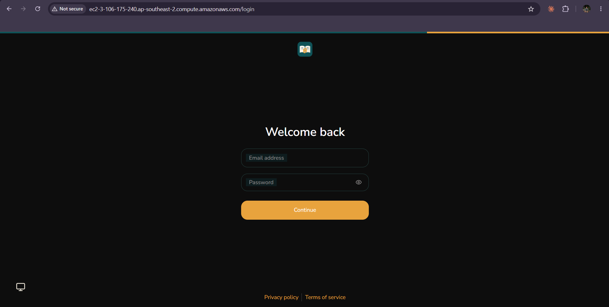
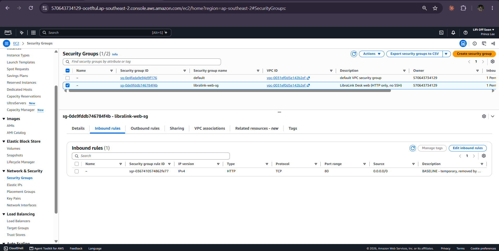
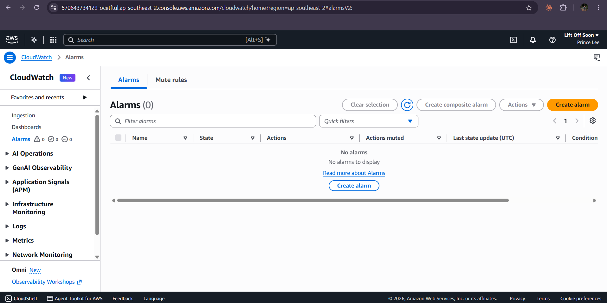

WS-G item 4
Baseline: the environment before we touched it
What LibreChat and our AWS account looked like at the start, recorded so the improvements on the other pages can be measured against something real.
When and how we recorded it
Baseline taken on FILL: date and time, at two moments: (1) stock LibreChat running on our laptop with no changes, and (2) the first AWS deployment straight after ops/aws/06-ec2.sh, before HTTPS, lock-down, monitoring or backups were added.
What we found
| Area | Baseline state | Why it matters |
|---|---|---|
| Application | Stock LibreChat: its own name and logo, model picker, agents, presets, public sign-up page, no system prompt, no knowledge of any library. | Not our system, and every enabled feature is something to secure. |
| Address | Plain http://ec2-…compute.amazonaws.com — no padlock, browser shows "Not secure". | Passwords and chats cross the internet unencrypted. |
| Network | Security group: port 80 open to 0.0.0.0/0 (the whole internet). | Anyone can reach the server directly, bypassing anything put in front of it. |
| AWS account | New Free-plan account: one owner login with no MFA, partner not added, no CloudTrail trail (only the default 90-day event history). | One shared all-powerful login, no proper audit trail. |
| Monitoring | Only the default EC2 metrics (CPU, network). No memory or disk metrics, no alarms, no dashboard, no application logs in CloudWatch. | A crash or full disk would go unnoticed until a user complained. |
| Backups | None. The database lives only on the server's disk. | Losing the server means losing every account and conversation. |
| Logs | Log files under /var/log/libralink with no size limit or rotation. | A runaway log can fill the disk (this became our incident). |
| Cost | FILL: instance type and the daily cost from Cost Explorer for the first full day; a USD FILL: 10 budget alert was set before anything else (day 1, step 1). | Brief section 6: set a budget alert on day one. |
Baseline evidence

📷 Add
evidence/B-01-http-not-secure.png: the app opened at http://ec2-… with the browser's "Not secure" label visible.
📷 Add
evidence/B-02-sg-open.png: EC2 › Security groups › libralink-web-sg › Inbound rules, showing 80 from 0.0.0.0/0.
📷 Add
evidence/B-03-baseline-metrics.png: EC2 › Instances › libralink-server › Monitoring tab (and/or CloudWatch › Alarms showing zero alarms).Baseline numbers (same measures as the Results page)
| Measure | Baseline value | Period |
|---|---|---|
| Alarms / time to detect a full disk | 0 alarms / never | — |
| Backups / restore tested | 0 / no | — |
| Answer quality | Stock LibreChat had no library knowledge: FILL: optional — ask 3 handbook questions on the stock app and count correct | FILL |
| Average answer time | FILL from the dashboard | FILL: date range |
| Memory used on t3.small | FILL: average % | FILL: date range |
| Cost per day | FILL: USD | FILL: date |